（左からRA-1、RA-3、HA-3、HA-5)
（左からRA-1、RA-3、HA-3、HA-5)
〜2000年のヘッドフォンアンプ
現時点でも、ヘッドフォンを使用する場合、音楽プレイヤーまたは、プリメインアンプのヘッドフォン端子につなぐのが一般的だが、最近ではヘッドフォン専用アンプの使用を考慮する方も増えたし、プレイヤーのヘッドフォン端子についても音質に配慮された製品も存在する。
こうしたヘッドフォンをより良い環境で使うという考え方が一般的になってきたのは、ここ10年ほどのことであり、各種のヘッドフォンアンプが入手できる環境になったのは5年ほど前からである。（注 2010年頃書いた文章です）
しかしヘッドフォン専用アンプの思想はかなり古い。管理人の知る限りで一番古いのはスタックスのSRA-4S（1960）である。全盛期のコンデンサー型ヘッドフォンはアンプのスピーカー用端子にトランスを内蔵したアダプターを接続するのが一般的であったが、スタックスでは早くからラインレベルの信号を直接増幅しヘッドフォンをドライブすることを考えていた。またダイナミック型ヘッドフォンについても、エレガが1962年にすでにRA-1を、その後もRA-3を発売していたし、1970年代にもナポレックスのHA-3、HA-5などが存在していた。ちなみにRA-1及びHA-3は単純なヘッドフォンアンプであり、RA-3及びHA-5はフォノイコライザー内蔵のプリアンプ型のヘッドフォンアンプである。
（左からRA-1、RA-3、HA-3、HA-5)
その後、1970年末から、ソニーのMDR-3に代表されるような掛け心地重視のヘッドフォンが流行することで、真剣なオーディオ機器としてヘッドフォンが扱われない時代が続いた。この時代では技術系の雑誌にまれにヘッドフォン専用アンプの製作記事が載る程度であった。コンデンサー型ヘッドフォンの時代が続いていれば、どこかの会社がスタックスに続いてヘッドフォン専用アンプを開発したかもしれないが、コンデンサー型はスタックスとごく少数の例外を除き、消滅した。この時代、ヘットフォンアンプといえば、スタジオや店頭で複数のヘッドフォンを同時に鳴らすことを目的としたものしか、市販品は存在しなかった。こうした流れを汲む製品にテクニカのAT-HA50がある。
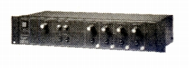
（1982年発売のタスカム（ティアックの業務用機器ブランド）のヘッドフォンアンプ MH-40。4台のヘットフォンを同時にドライブ可能）
こうした状況を変えたのは1980年代末〜90年代初頭に登場した各社の超高級機種である。ソニーのMDR-R10は、高級なアンプやCDプレイヤーでヘッドフォン端子がないことを想定して、シグナルセレクターDRC-R10(\50,000)を用意した。またグラドのHP-1000(HP-1,2,3) も、国内に最初に導入された時には、ヘッドフォン端子ではなく、付属のアダプターを介してスピーカー端子に接続することを推奨していた。そしてAKGのK1000やグラドのHP-1000専用のアンプが登場するようになった。
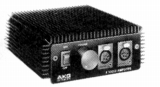
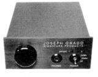
（左 K1000用アンプ 右 グラドのHPA)1990年代半には、業務用ではない観賞用のヘッドフォン専用アンプが登場するようになってきた。この時期は管理人がオーディオから距離を取っていた時代なのでその全容はわからないが、手元に資料がある何点かについて紹介する。
SYSTEMATIC(システマティック）
国内のメーカー。詳細は不明。ネットの情報ではすでにメーカーは存在しないらしい。
ehd-6
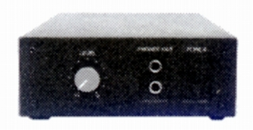
■価格 150,000円
■型式 ダイナミックヘッドフォン用パワーアンプ
■インピーダンス
8Ω
■最大出力 15W×2
■入力端子 ラインレベル平衡型端子
■電源 100V、AC50,60Hz
■サイズ
68H×150W×185D�o 2.5kg
■発売 1992年9月
■備考
ヘッドフォン出力2系統
マスターボリュム装備。
XLR/ピン変換プラグ付属
McCORMACK（マコーマック）
アメリカのメーカー。マイクロ・コンポーネント・シリーズの中にヘッドフォンアンプを用意。代理店は�潟iスペックだった。
MID
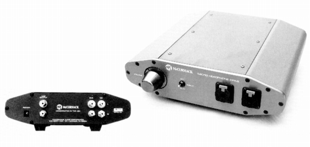
■価格 135,000円
■型式 ダイナミックヘッドフォン用アンプ
■インピーダンス
■最大出力 3W×2
■入力端子 ラインレベル2系統
■電源 100V、AC50,60Hz ACアダプター付属
■サイズ
77H×242W×229D�o 3.7kg
■発売 1995年5月
■備考
ヘッドフォン出力2系統、RCA出力あり
ボリュム装備。
ゲイン切替（LOW 6dB、MID 12dB、HIGH
26dB)
価格は1997年のもの。1999年では145,000円。
価格については115,000円とする資料もある。
CREEK（クリーク）
イギリスの比較的リーズナブルな価格帯のアンプやCDプレーヤーなどで知られるメーカー。1996年にローインピーダンス機種向けのヘッドフォンアンプOBH-11を発売している。現在もその後継機種が販売中。
OBH-11
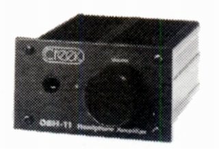
■価格 35,000円
■型式 ダイナミックヘッドフォン用アンプ
■インピーダンス
■最大出力 300mW(30Ω）
■入力端子 ラインレベル1系統
■電源 100V、AC50,60Hz ACアダプター付属
■サイズ
66H×100W×100D�o 360g
■発売
1996年5月
同じ筐体を使ったフォノイコライザーアンプ(OBH-8、9MC、8SE）あり。
価格は1997年のもの。1999年では\40,000。
OBH-11SE
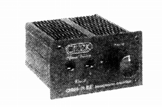
■価格 60,000円
■型式 ダイナミックヘッドフォン用アンプ
■インピーダンス
■最大出力 10mW×2以上(30〜300Ω）
■入力端子 ラインレベル1系統
■電源
100V、AC50,60Hz 別売の強化電源(OBH-2 \20,000）使用
■サイズ 66H×100W×130D�o 360g
■発売
1999年1月
高インピーダンス対応の改良型、ライン出力あり。ヘッドフォン出力2系統。
ボリュウムにアルプス・ブルーベルベット・ボリュウムを使用。
窪田登司氏設計アンプ
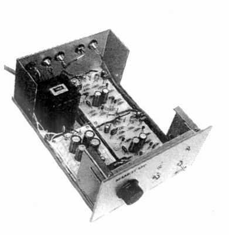
■価格 80,000円（完成品）
■発売
1990年代後半
■備考 音楽之友社の系列会社で販売していた窪田登司氏設計のヘッドフォンアンプ
雑誌に広告が掲載され、さまざまな形態で販売されていた。
入力系の増設など改造にも応じていたようだ。
回路基盤 3,000円
アンプユニット(2ch
1組） 19,047円
パーツセット（シャーシ込み）
41,200円
MUSICAL FIDELITY（ミュージカル フィデリティ）
コンパクトなA級動作プリメインアンプA-1で有名になったイギリスのメーカー。Xシリーズの一つに管球式のヘッドフォンアンプがあった。ハイインピーダンスヘッドフォン向け。当時秋葉原で扱っていたのはダイナミック・オーディオだった。同デザインの後継機あり。
X-Cans
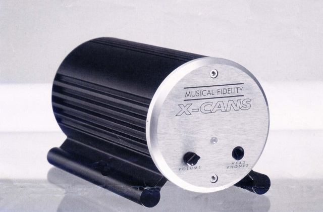
■価格 58,000円
■型式 真空管式ヘッドフォンアンプ
■インピーダンス
■実効出力
65mW×2(20Ω） 95mW×2(39Ω）
■入力端子 ラインレベル1系統
■電源
100V、AC50,60Hz ACアダプター付属
■サイズ 110H×110W×220D�o
■発売 1997年4月
■備考
ヘッドフォン出力1系統、RCA出力あり
ボリュム装備。
TRIODE（トライオード）
1994年設立の真空管アンプなどを得意とするメーカー。キット形式での販売も多い。1999年にヘットフォンアンプVP-Headを発売した。
VP-Head(Kit)
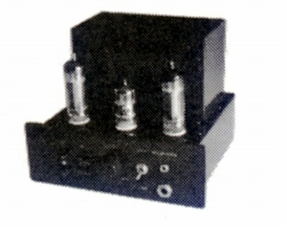
■価格 29,800円
■型式 真空管式ヘッドフォンアンプ
■インピーダンス
■最大出力
1W×2(A級動作時）
■入力端子 RCA1系統、ミニジャック1系統
■電源
■サイズ
155H×180W×180D�o 5.0kg
■発売 1999年1月
■備考
ヘッドフォン出力2系統（標準/ミニ）
使用真空管 12AX7A×2、6BQ5×2
完成品販売は\39,800。
CONISIS（コニシス）
プロユースのパワーアンプなどを作るメーカー。MJ1999年3月号にヘットフォンアンプが紹介されている。ステージでのワイヤレス・フォールドバックモニター用の006P電池ドライブの機種。
MHP-01
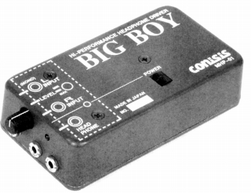 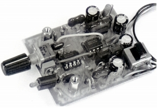
■価格 オープン価格
■型式 乾電池式ヘッドフォンアンプ
■入力インピーダンス 100kΩ
■出力インピーダンス 4.7Ω
■入力端子
ミニジャック
■電源 006P電池×2
■サイズ 31H×60W×111D�o 255g（電池含む）
■発売 1999年3月
■備考
ヘッドフォン出力1系統（ミニ）
使用半導体 TIのNE5532AP
2000年になると国産機3機種と、エルゴのAMP1が選択肢に加わる。
山本音響工芸
真空管オーディオと木工を得意とするメーカー。現行（2015年10月）モデルはHA-03。
HA-01
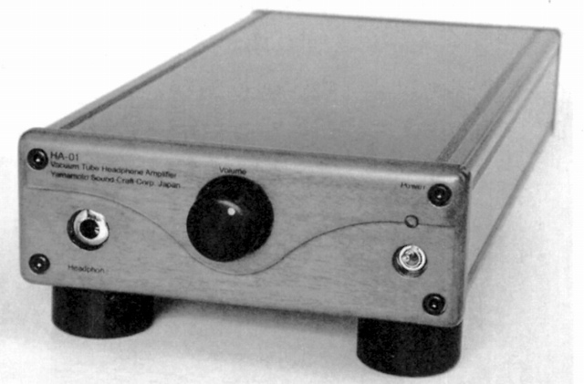
■価格 68,000円
■型式 真空管式ヘッドフォンアンプ
■適合インピーダンス
30〜200Ω
■定格出力 180mW
■入力端子 ラインレベル1系統
■電源
■サイズ 53H×136W×268D�o
1.6kg
■発売 2000年
■備考
トランスの基本設計は50Ω対応
感度 50Ω負荷時に0.26Vで1mW出力。
ブラウン・ローズ・桜クリヤー・ダークブラウンの4種の仕上あり。
SOUND（サウンド）
東京サウンドの真空管アンプなどのブランド。この文書作成時には直接の後継モデルが生産されていたが、2013年営業停止している。
Valve X
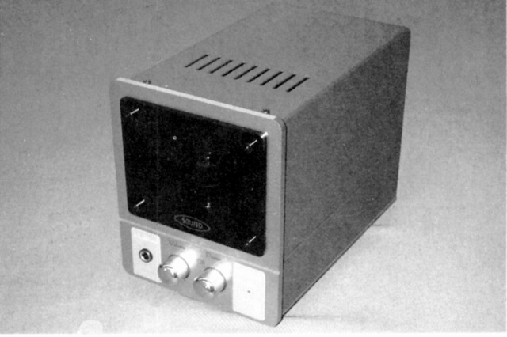
■価格 58,000円
■型式 真空管式ヘッドフォンアンプ
■適合インピーダンス
16〜600Ω
■出力 650mW×2
■入力端子 ラインレベル1系統
■電源
■サイズ 170H×130W×230D�o
3.4kg
■発売 2000年
■備考
パラレルアウト端子あり
出力はフロントに標準ジャックで、リアパネルにミニジャック
背面にインピーダンス切替（100Ω以下/100Ω以上）あり。
SAEC（サエク・コマース）
当時（2000年頃）、ULTRASONE（ウルトラゾーネ）の代理店だったオーディオアクサセリーメーカー。独自の音場調整機能(SRS=サウンド・リトリーバル・システム）や低音増強機能(True BASS)がある多機能製品だったが、付加機能の評価は低かった。
HP-2000
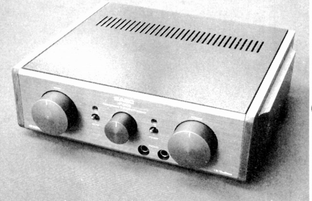
■価格 110,000円
■型式 ヘッドフォンアンプ
■適合インピーダンス
■出力
20mW(8〜100Ω)
■入力端子 ラインレベル1系統
■電源 100V、AC 消費電力10W
■サイズ 80H×255W×240D�o
2.5kg
■発売 2000年
■備考
SRS=サウンド・リトリーバル・システムのON/OFF、
効果量の調整可能。
低音増強機能(True
BASS)のON/OFFあり。
サイトマップへ